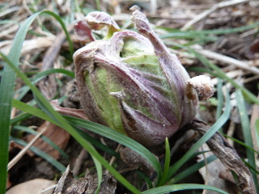
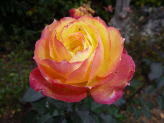
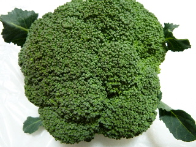
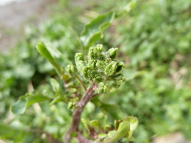
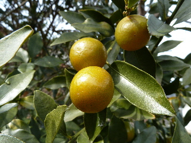
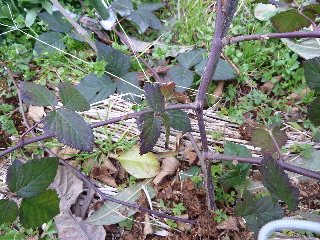

遊びで植物を育てよう
2013/02/03
ふきのとうの季節になりました。
2月になったので、ふきのとうが出ていました。

苦いですよね。
季節のものなので、我慢して食べます。
【2月TOP】 【日記TOP】 【園芸TOP】
2013/02/03
もう梅が咲いてる。
梅ってもう咲く時期でしたっけ？

梅の実が出来る普通の梅がもう咲いていました。
一部ですけど、綺麗でした。
【2月TOP】 【日記TOP】 【園芸TOP】
2013/02/03
寒い時期でも咲いてるバラです。
気が付くと咲いてる四季咲きのバラです。

なんて名前かわからないですけど、このバラはしょっちゅう咲いてる気がする。
あんまり好きな色じゃないって昔思っていたんですけど、このごろはこれもいいなって思うようになってきました。
大事にしたいですね。
【2月TOP】 【日記TOP】 【園芸TOP】
2013/02/03
ブロッコリーを収穫しました。
ちょっと小さめですが収穫しました。

実がぎっしりしまっています。
美味しそうです。
【2月TOP】 【日記TOP】 【園芸TOP】
2013/02/09
寒いけどルッコラに蕾が出来ました。
畑にいると、春がそこまで来てる感じがしますね。

ルッコラ（ロケット）に蕾が出来てました。
花が咲くとそっちに栄養がいっちゃうそうなので、つみとっちゃいますけど。
【2月TOP】 【日記TOP】 【園芸TOP】
2013/02/17
金柑が美味しくなりました。
我が家の金柑が黄色くなってきました。

食べてみたら美味しかったです。
これからちょいちょいつまみ食いをしようと思います。
畑仕事の合間とかに、パクっと食べるのが一番美味しい気がする。
【2月TOP】 【日記TOP】 【園芸TOP】
2013/02/24
ブッラックベリーに葉っぱが出てた。
そろそろ枝を誘引しないとって思って見たら新しい葉っぱが出てました。

去年買ったブラックベリーなので、今年初めての誘引です。
1年でとっても大きくなったんですが、2年目はどこまで大きくなるのなか？
沢山の収穫を期待しています。
株も増やしたいな。
【2月TOP】 【日記TOP】 【園芸TOP】
畑仕事じゃないよ。
【おいしいものを食べよう。】【しっかり寝よう。】
【ソロ活をしよう!】【季節感のあることをしよう。】【動画視聴はほどほどに。】【当サイトの全てのコンテンツは無断転載禁止です。】